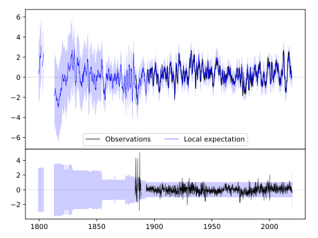
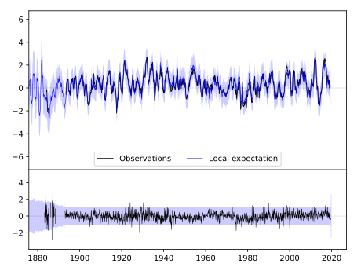
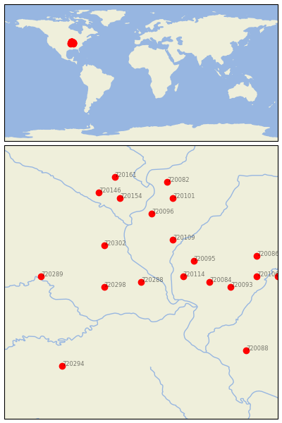

BOWLING GREEN 1 E [USA]


| Neighbour | Name | Country | Distance | Lon/Lat | Years |
|---|
| 720288 | BOWLING GREEN 1 E | USA | 0 | -91.2, 39.3 | 1883-2019 |
| 720298 | MEXICO | USA | 61 | -91.9, 39.2 | 1892-2019 |
| 720114 | WHITE HALL 1 E | USA | 69 | -90.4, 39.4 | 1854-2019 |
| 720095 | JACKSONVILLE 2E | USA | 96 | -90.2, 39.7 | 1858-2019 |
| 720302 | STEFFENVILLE | USA | 98 | -91.9, 40.0 | 1893-2019 |
| 720109 | RUSHVILLE | USA | 102 | -90.6, 40.1 | 1889-2019 |
| 720084 | CARLINVILLE | USA | 111 | -89.9, 39.3 | 1891-2019 |
| 720096 | LA HARPE | USA | 145 | -91.0, 40.6 | 1893-2019 |
| 720093 | HILLSBORO | USA | 146 | -89.5, 39.2 | 1893-2019 |
| 720289 | BRUNSWICK | USA | 163 | -93.1, 39.4 | 1889-2019 |
| 720154 | MT PLEASANT 1 SSW | USA | 181 | -91.6, 40.9 | 1863-2019 |
| 720101 | MONMOUTH | USA | 185 | -90.6, 40.9 | 1881-2019 |
| 720106 | PANA 3E | USA | 189 | -89.0, 39.4 | 1869-2019 |
| 720086 | DECATUR WTP | USA | 196 | -89.0, 39.8 | 1875-2019 |
| 720146 | FAIRFIELD | USA | 200 | -92.0, 41.0 | 1855-2019 |
| 720082 | ALEDO | USA | 215 | -90.7, 41.2 | 1879-2019 |
| 720294 | LEBANON 2W | USA | 220 | -92.7, 37.7 | 1890-2019 |
| 720115 | WINDSOR | USA | 223 | -88.6, 39.4 | 1885-2019 |
| 720088 | DU QUOIN 4 SE | USA | 225 | -89.2, 38.0 | 1886-2019 |
| 720161 | WASHINGTON | USA | 226 | -91.7, 41.3 | 1875-2019 |